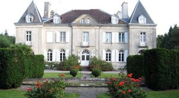
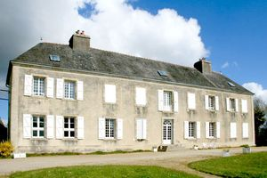
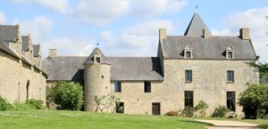

Recensement Jean-Claude Truffet
| Département | 29 — Finistère |
| Canton | Quimperlé |
| Commune | Arzano |
| Type d'édifice | Château |
| Période d'origine | XVI-XVII |
| Coordonnées GPS | 47° 54' 30" Nord, 3° 27' 03" Ouest |



Deux châteaux à Arzano Kerlarec et Laz.Trévarez (voir article) KERLAREC, il appartient aux Kerouallan, famille possessionnée autour de Quimperlé et dans le Morbihan voisin (Gestel et Lignol). Victor de Kerouallan (1802-1876), partisan d´une agriculture moderne et lucrative, acquiert Kerlarec en 1834. Il fait raser les bâtiments existants et construire, à l´exception des pavillons d´angle, le logis actuel achevé en 1840, sans doute d'après les plans d'un architecte. Il est probablement aussi l´auteur de la ferme-métairie à l´est, de l´orangerie et des écuries à l´ouest ainsi que de l´allée d´accès. Les travaux sont achevés en 1840. Le domaine couvre dans la seconde moitié du XIXe siècle environ 200 hectares et fonctionne comme une entreprise agricole dont le caractère moderne pour l´époque est attesté : défrichement des landes, introduction de pins sylvestres. Le château est agrandi en 1894 par Constance de Kerouallan et Etienne de Lépineau (pavillons d´angle, aménagements intérieurs, vitraux); de cette période subsistent également des éléments de papiers peints. A l´époque contemporaine, le domaine a été divisé en quatre propriétés différentes. Une partie des appartements du château a été aménagée en hôtellerie. PLESSIS, il a appartenu au XVIe siècle à la famille Du Plessis de La Villeneuve, originaire de Trégourez, puis est passé au XVIIe siècle aux mains de la famille de Kernezné avant d'être acheté vers 1890 par James de Kerjégu, propriétaire du château de Trévarez.
LAZ; date du XVIe siècle. Il est de style Classique. C'était une demeure familiale qui appartenait à Paul de Laage. Connu aussi sous le nom de château de Kerigomarc'h est édifié à lemplacement d'un ancien manoir de la famille Bizien. Le manoir de Kerigomarc´h appartenait en 1426, à la famille Bizien dont la présence était déja attestée à Arzano dès le XIIIe siècle, qui était le berceau familial. Le manoir du Laz actuel a probablement été construit pour Jean Bizien au début du XVIe siècle. Ses armoiries figurent au-dessus de la porte d'entrée, une clé de voûte de la cage d´escalier. On les retrouve aussi associées à d´autres armoiries, peut-être Kerouallan, sur le linteau de la cheminée de la pièce ouest du rez-de-chaussée. L´édifice portent les traces de remaniements et de repentirs. En 1610, le domaine comprend une métairie au nord et un moulin à eau au sud. Suite à une alliance, il passe à la famille de Laage dont le patronyme, déformé ultérieurement en Laz, remplace l´ancien toponyme qui demeure néanmoins en usage pour l´ancienne métairie. Au XVIIe siècle, on effectue des modifications secondaires tel que l'agrandissement et couronnement des baies ouest des grandes salles et de la lucarne ouest, cloison du rez-de-chaussée. Une pierre de la façade Sud porte la date de 1760, date où la famille de Rosily en est propriétaire. A la Révolution, le domaine est vendu comme bien national, puis acheté en 1812 par Benjamin Brizoal de Guilligomarc´h. Des lambris de style néogothiques, uvre du menuisier Pigueller d' Arzano, sont mis en place dans la salle ouest du rez-de-chaussée au milieu XIXe siècle. Au début du XXe siècle, par la famille Guyonvarc´h, descendants des Brizoal, des travaux d´agrandissement, non achevés, affectent la partie Est de l´édifice. Il est inscrit aux M.H. depuis 2006.
Kerlarec; Famille Constance de Kerouallan famille Du Plessis Laz; famille de Laage
"
Deux châteaux à Arzano Kerlarec grav-1 Plessis grav-2 et Laz grav-3. Laz GPS : 47° 54' 30" Nord, 3° 27' 03" Ouest